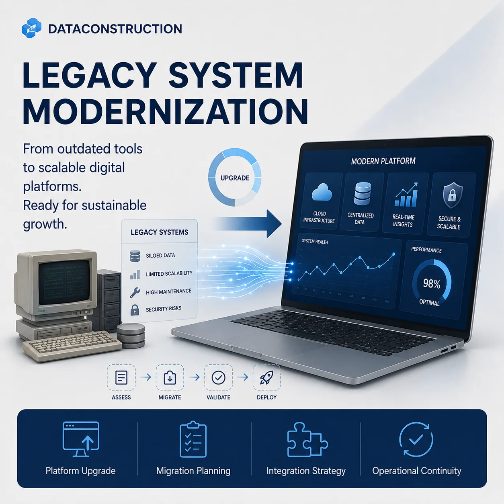
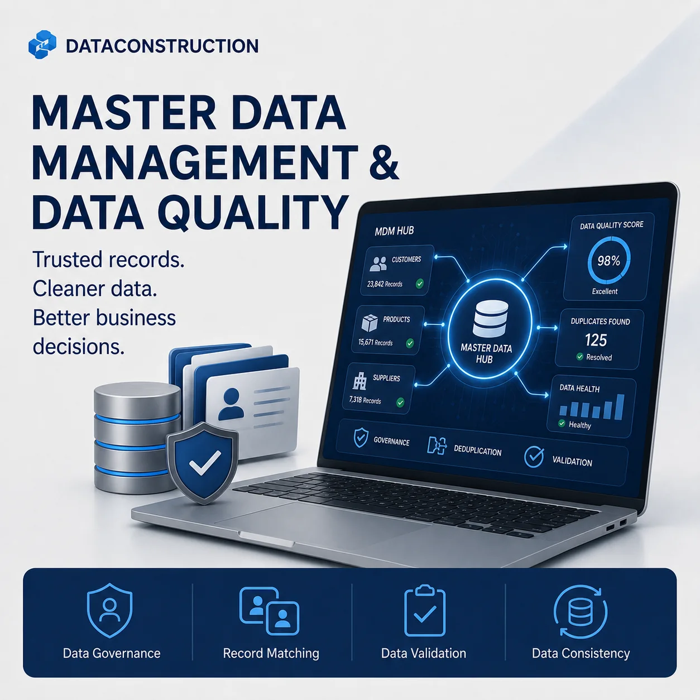
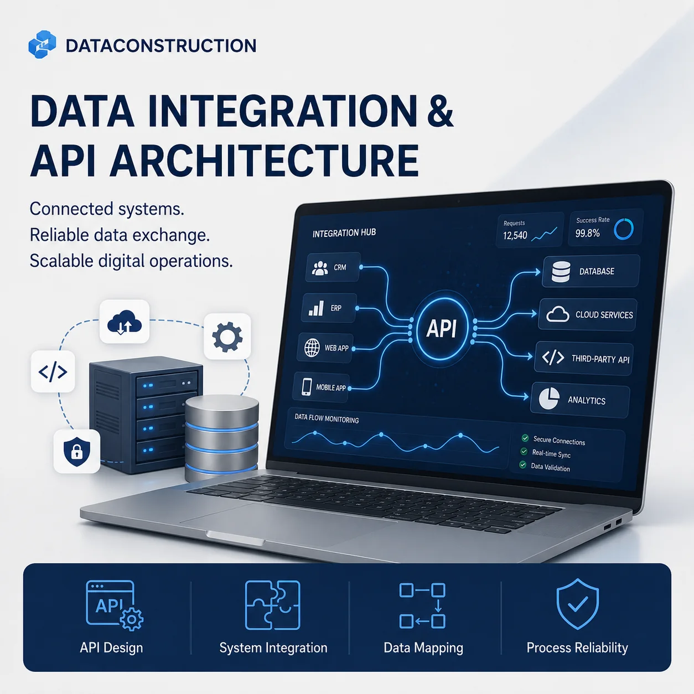

Бизнес-анализBusiness analysis
Цели, реальные процессы, роли, требования и точки ценности.Goals, real workflows, roles, requirements and value points.
Системный консалтинг · КанадаSystems consultancy · Canada
Мы находим, что на самом деле не работает в процессе, а затем соединяем бизнес-логику, данные, людей и технологии в одну работающую систему.
We find what is actually broken in the process, then connect business logic, data, people and technology into one working system.
Обсудить задачуDiscuss a project↗Ясная логика до первой строки кода.Clear logic before the first line of code.
Подключаемся там, где бизнесу нужна ясность: до дорогой разработки, во время трансформации или на стыке нескольких систем.
We step in where business needs clarity: before costly development, during transformation, or between multiple systems.
Цели, реальные процессы, роли, требования и точки ценности.Goals, real workflows, roles, requirements and value points.
Сценарии, исключения, API и архитектурные решения.Scenarios, edge cases, APIs and architecture decisions.
Убираем ручные согласования и разрывы.Removing manual approvals and operational gaps.
Надёжные потоки данных для отчётов, которым доверяют.Reliable data flows for reports people trust.
Изменения, которые выдерживают реальную эксплуатацию.Change designed to survive real operations.
DataConstruction / Method
Проблема не всегда в программном обеспечении. Иногда это неясная ответственность, недостающие данные, ручные согласования или отчёты, которым никто не доверяет.
The problem is not always the software. Sometimes it is unclear responsibility, missing data, manual approvals, or reports that nobody trusts.
Analytics · Industrial systems · Automation
Структурировали требования и потоки данных, описали API и помогли превратить операционные данные в понятные панели управления.
We structured requirements and data flows, described APIs, and helped turn operational data into clear dashboards.
Открыть проект →View project →
Документировали сценарии, роли, интеграции и точки принятия решений. Системный анализ — это управление риском до написания кода.
We documented scenarios, roles, integrations and decision points. System analysis is risk management before code is written.
Открыть проект →View project →
От модернизации платформ до управляемых данных и надёжного обмена между системами.
From platform modernization to governed data and reliable exchange between systems.

Переход от разрозненных устаревших инструментов к масштабируемой платформе без потери операционной непрерывности.
Moving from fragmented legacy tools to a scalable platform without losing operational continuity.
Открыть проект →View project →
Единые доверенные записи, правила качества, устранение дублей и прозрачное управление ключевыми данными.
Trusted records, quality rules, deduplication and transparent governance of critical business data.
Открыть проект →View project →
Проектирование устойчивого обмена данными между CRM, ERP, веб-приложениями, облачными и внешними сервисами.
Designing reliable data exchange across CRM, ERP, web applications, cloud and third-party services.
Открыть проект →View project →